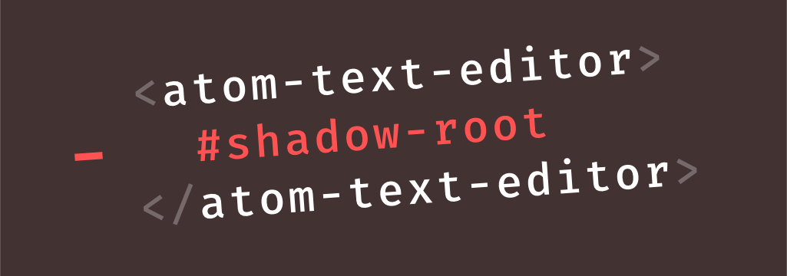

-
Atom 1.14
February 8, 2017
iolsen
-
Atom on Windows
January 18, 2017
damieng
Last year I joined the Atom team with the goal of making Atom a better experience on Windows and thought it would be worth highlighting some of our work so far as well as a few of the things new in Atom 1.14 (currently in beta).
If you haven’t tried Atom on Windows in a while or were just plain heads-down on your projects here’s some Windows-specific improvements you may have missed.
Read more -
Atom 1.13
January 10, 2017
-
Removing Shadow DOM boundaries from text editor elements
November 14, 2016
as-cii
We recently released Atom 1.13 Beta and it features a foundational change to the editor rendering internals that we would like to share with you: the removal of the Shadow DOM boundary from
<atom-text-editor>elements. In this blog post we are going to shed some light on the reasons that drove its introduction, as well as why we eventually decided to transition away from it and employ a different technique instead.
Read more -
Atom 1.12
November 9, 2016
-
The Wonderful World of Keyboards
October 17, 2016
nathansobo
With the beta release of Atom 1.12, we’re rolling out some long-awaited improvements to Atom’s support for international keyboard layouts. Before 1.12, users on many layouts needed to install a community-maintained package called
keyboard-localizationto enable full support for their keyboards, but now users from all locales should experience hassle free keyboarding in Atom’s default configuration. In this post, we’ll discuss the challenges we faced recognizing keybindings and how we arrived at a solution.
Read more
-
Atom 1.11
October 11, 2016
-
Atom 1.10 and 1.11 beta
August 31, 2016
lee-dohm
Hot on the heels of the last release, we’ve released Atom v1.10 and v1.11-beta!
Read more -
Atom 1.9 and 1.10 beta
August 1, 2016
-
Atom 1.8 and 1.9 beta
June 6, 2016